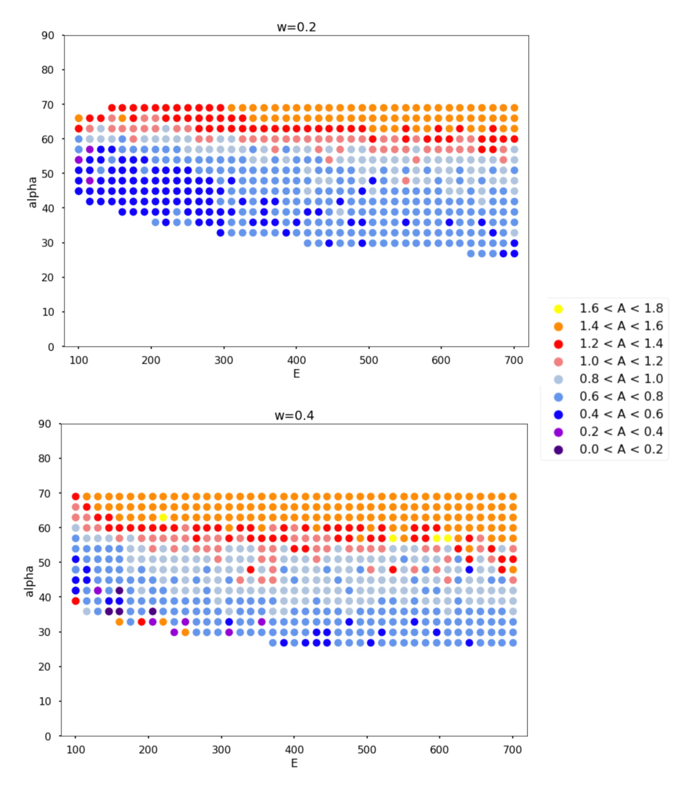
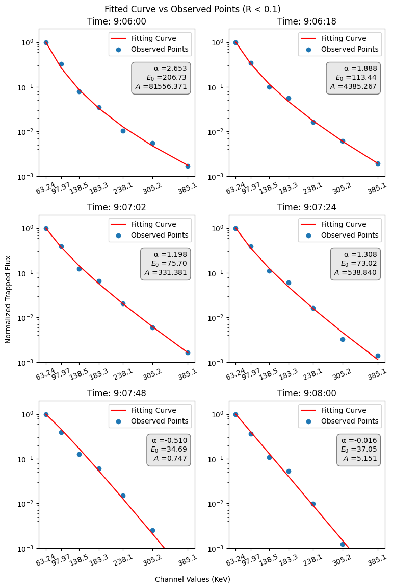

C. & J. Nyheim Plasma Institute · Drexel University
Electron super- and sub-diffusion in velocity space due to nonlinear resonances with whistler-mode waves
The research question
Energetic electrons in Earth's magnetosphere exchange energy with electromagnetic waves. Repeated interactions can change both their energy and their pitch angle, the angle between a particle's velocity and the magnetic field. This project investigated how nonlinear resonances with whistler-mode waves can produce spreading that is faster or slower than ordinary diffusion.
As a research assistant in the Computational Physics Laboratory, I worked on numerical models of these interactions and statistical analysis of satellite observations. The work brought together dynamical systems, stochastic simulation, and spectral fitting.
Modeling repeated wave-particle interactions
I developed Julia simulations that update electron energy and pitch angle over successive resonant interactions. The model represents two processes: phase bunching, which produces relatively small energy changes, and phase trapping, which can produce larger jumps. Their probabilities and energy changes depend on the geometry of the resonance.
- Numerical calculations: used root finding and quadrature to calculate the area enclosed by a resonance separatrix, the boundary between trapped and untrapped motion.
- Particle ensembles: simulated repeated interactions across initial energies and pitch angles, then examined how the distributions spread.
- Transport diagnostics: compared early-time spreading rates and mapped their dependence on initial conditions and wave frequency.
M(n) ∝ nA
Here, M measures ensemble spreading and n counts resonant interactions. The exponent A distinguishes sub-diffusion (A < 1), ordinary diffusion (A ≈ 1), and super-diffusion (A > 1).
The model examples show that early-time spreading varies across initial conditions. They also motivate studying how changes in trapping probability relate to that behavior; the results shown here describe finite sequences of modeled interactions.

Analyzing satellite electron spectra
A related observational strand used ELFIN satellite measurements of trapped and precipitating electrons. I built Python tools to align electron-flux measurements with spacecraft position, calculate precipitation-to-trapped-flux ratios, and compare energy spectra.
I normalized spectra to the lowest-energy channel and fitted power-law models with an exponential cutoff. Medians, histograms, and density estimates helped compare groups with different precipitation characteristics. This work characterized the observations and provided a complementary perspective on electron transport.

Related computational work
I also studied a slowly varying Hamiltonian system by integrating trajectories, calculating adiabatic invariants, and comparing ensembles of initial conditions. These calculations examined how initial positions in phase space relate to later distributions of the action, a quantity used to describe orbital motion.